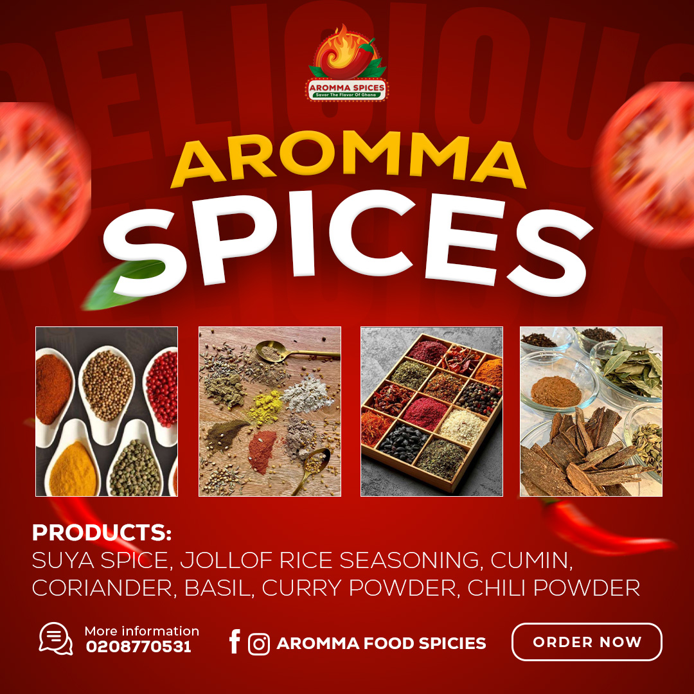

Esi's Local Spices
Esi’s Local Spices, as a hypothetical small to medium-sized enterprise (SME) in Ghana, could engage in a variety of activities centered around the production, packaging, and sale of local Ghanaian spices. The original brand is Esi’s local spices but for brand visibility and for our brand promotion, we are rebranding Esi’s local spices to Aromma naturals spices.
Rebranding
Aromma Spices is a retail spice shop based in Kumasi, Ghana, offering a wide variety of high-quality spices, herbs, and seasonings. Here are some additional details about the business:
Product Range:
- Traditional Ghanaian spices and blends (e.g., suya spice, jollof rice seasoning)
- International spices and herbs (e.g., cumin, coriander, basil)
- Specialty spices and blends (e.g., curry powder, chili powder)
- Organic and non-organic options

Target Audience:
- Local Ghanaian customers
- Expats and foreigners living in Ghana
- Foodies and cooking enthusiasts
- Restaurants and food businesses
Unique Selling Points:
- High-quality products sourced from local farmers and international suppliers
- Expert knowledge and advice from experienced staff
- Competitive pricing
- Support for local Ghanaian farmers and the community
Store Experience:
- Welcoming and friendly store atmosphere
- Aromatic and visually appealing displays
- Tasting and sampling opportunities
- Cooking classes and workshops (future plan)
Aromma Spices aims to become the go-to destination for spice enthusiasts in Ghana, while also promoting Ghanaian cuisine and supporting local communities.
Based on Aromma Spices' business goals and target audience, it needs a digital visibility strategy that focuses on:
Objectives:
- Local Search Visibility: Ensure the business appears in local search results on Google My Business, Google Maps, and other directories, to attract local customers.
- Social Media Presence: Establish a strong presence on Facebook, Instagram, and Twitter to engage with customers, share recipes and tips, and promote products.
- E-commerce Website: Create a user-friendly website for online shopping, with a secure payment system and delivery options, to cater to customers who prefer online shopping.
- Influencer Marketing: Partner with local food influencers and bloggers to promote Aromma Spices' products and reach a wider audience.
- Content Marketing: Develop a blog on the website to share recipes, cooking tips, and stories about Ghanaian cuisine, to establish the business as an expert in the field.
Objectives
- Awareness: Create awareness of Aromma Spices' brand and products among the target audience. Increase visibility and recognition of the brand in the market.
- Positioning: Position Aromma Spices as a premium and authentic Ghanaian spice brand. Emphasize the quality and uniqueness of the products.
- Engagement: Engage with customers and build a loyal community. Encourage customer interactions through social media, email, and in-store experiences.
- Conversion: Drive sales and increase revenue through online and offline channels. Encourage customers to try new products and repeat purchases.
Comprehensive Strategy for Aromma Spices:
Objectives:
- Increase brand awareness and visibility among the target audience.
- Position Aromma Spices as a premium and authentic Ghanaian spice brand.
- Drive sales and increase revenue through online and offline channels.
Messaging:
- "Experience the authentic taste of Ghana with Aromma Spices."
- "Discover the secret to delicious cooking with our premium spices."
- "Join the Aromma Spices community for exclusive recipes and promotions."
Content
- Images: High-quality product photos, Ghanaian cuisine dishes, and behind-the-scenes store photos.
- Videos: Recipe tutorials, product demos, and store tours.
- Audio: Podcasts on Ghanaian cuisine and cooking tips.
- Infographics: Spice guides, recipe tips, and promotions.
- Fliers: Promotional materials for in-store events and sales.
Platforms:
- Facebook: Primary platform for building a community, sharing content, and running targeted ads.
- Twitter: Real-time engagement, customer support, and promotions.
- Instagram: Visual storytelling, product showcases, and influencer collaborations.
- Email Marketing: Newsletters, exclusive offers, and loyalty programs.
- Website/E-commerce: Central hub for online sales, product information, and store location.
- Google My Business: Online directory listing for local search visibility.
Tactics:
- Social media contests and giveaways.
- Influencer partnerships and sponsored content.
- Email marketing campaigns and loyalty programs.
- In-store events and promotions.
- Online advertising (Facebook, Google Ads).
- Content marketing (blog posts, videos, podcasts).
Key Performance Indicators (KPIs):
- Website Traffic:
- Metric: Number of unique visitors, page views, and bounce rate
- Target: Increase website traffic by 20% within the next 6 months
- Tools: Google Analytics
- Social Media Engagement:
- Metric: Follower growth rate, engagement rate (likes, comments, shares), and reach
- Target: Increase social media followers by 30% within the next 6 months and